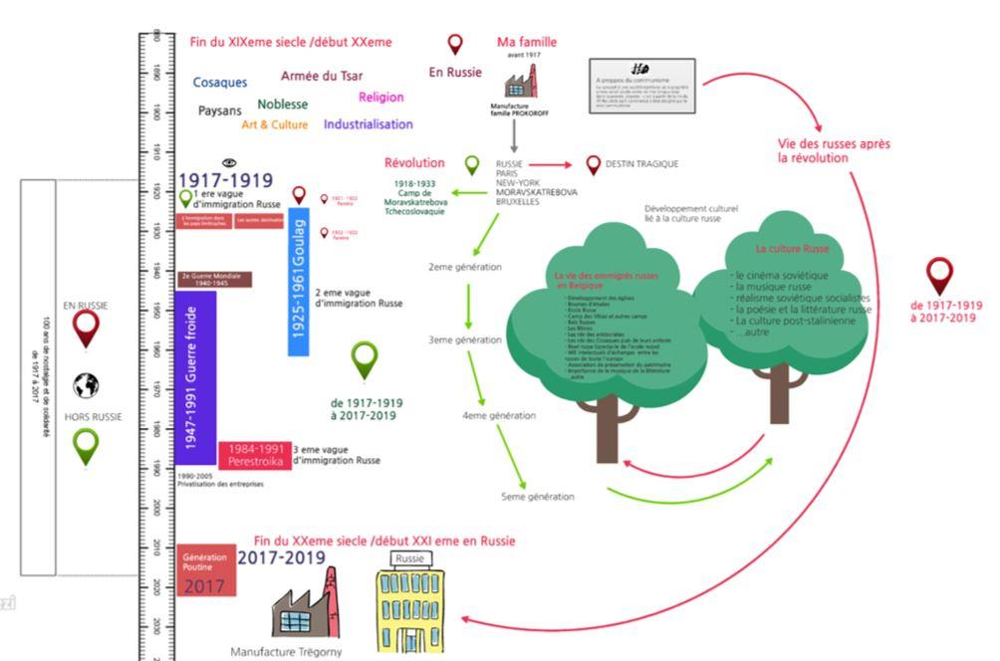
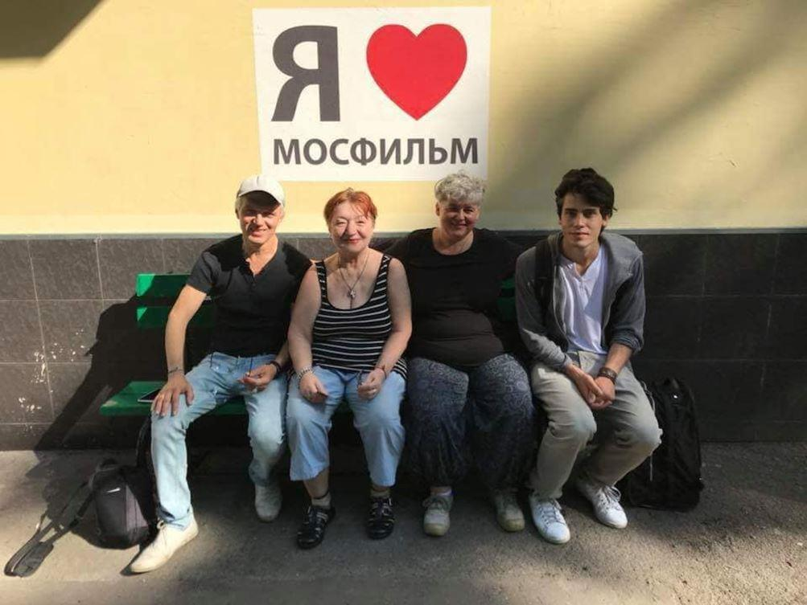

À travers plusieurs épisodes successifs que vous pourrez lire ces prochains mois dans « Méthode », Valérie Felder, réalisatrice belge nous fera tout à la fois découvrir la naissance d’un reportage sur la Russie et une part d’intimité des personnes rencontrées. Une belle aventure à suivre…
TROUVER UN TITRE
« Nadiejda » : Un film documentaire au cœur de ma Russie. « Nadiejda » est un prénom russe qui signifie espoir. Je cherchais pour mon film documentaire un titre qui n'aurait pas besoin d'être traduit et qui serait suffisamment symbolique pour faire sens. Avec mes amis, Vadim PIANKOV¹ et Natalia PIANKOVA², nous en avons beaucoup parlé car, au départ, le film devait s’appeler 100 ans de nostalgies russes ... mais je le trouvais beaucoup trop long. Vadim, Natalia et Daniil NAÏDENOV³ ont écrit la deuxième partie du scénario qui se passe en Russie. Il était essentiel pour moi de respecter les 2 points de vue : celui de ceux qui vivent hors Russie, et celui de ceux qui vivent en Russie, avec la sensibilité et l’influence qui leur est propre.
LE CHEMINEMENT
Avant de rentrer dans le vif du sujet, c'est-à-dire comment j'en suis arrivée à faire un documentaire retraçant 100 ans de nostalgie russe ici et là-bas, je voudrais attirer votre attention sur ce qui est essentiel pour moi : pourquoi « Ma Russie » et non « La Russie » ?
Pour moi, rien n'est plus abstrait qu'un territoire lorsque nous dévoilons les émotions qui nous habitent. La « pensée » n'est jamais clairement tracée ni limitée dans le temps. Pourtant, lorsque nous parlons de nos racines, nous citons souvent un pays, une région, une époque. Est-ce que vivre hors de ce territoire, de ce temps, créerait en nous un trou béant que l'on cherchera par la suite à combler pendant plusieurs générations ? – le déracinement. Si notre culture c'est tout ce que nous prenons toujours avec nous, alors elle n'est limitée par aucune frontière. Dans ce pays sans frontière le temps n'existe pas.
Nos pensées nous suivent, nous précèdent, s’étendent, se multiplient, parfois même avec nos enfants et petits-enfants. Les aiguilles y sont indépendantes les unes des autres. Minutes, secondes, années, tout cela va et vient dans un sens giratoire aléatoire. La pensée n'est ni sédentaire ni séquentielle elle est curieuse et libre...

LA CONVERSATION
Tout a commencé en 2016. Je parlais avec Roberto – un ami cinéaste. Nous avions été au Liban quelques mois plus tôt. Je lui parlais de mon projet d'aller en vacances en Russie en 2017. « Pourquoi en 2017 ? » Parce que mon grand-père maternel a quitté la Russie lors de la révolution Russe (1917-1920), alors qu'il n'avait que 7 ans, et que je ne suis jamais allée en Russie. Il me posa alors des questions sur la vie de mon grand-père et sur mon rapport à la culture russe. J'étais très étonnée d'avoir autant de choses à lui raconter à ce sujet. Et il fut très étonné d'apprendre que dans mon enfance, j'avais été à l'école russe le mercredi après-midi, que j'étais Orthodoxe, que les familles d'origine russe avaient très souvent vécu leur russitude avec une certaine nostalgie, et que de nombreux tempéraments atypiques avaient bercé mon enfance de souvenirs dont je resterais à jamais imprégnée.
LA QUESTION
« N’as-tu jamais pensé à faire un documentaire sur ce sujet ? » Non. J'étais maintenant très loin de tout cela. Je ne fréquentais plus mes amis russes. Avec la vie qui va, je les avais perdus de vue. De toute façon, je ne connaissais pas grand-chose à l'histoire de l'immigration russe.

Lors du tournage du documentaire, en juillet 2018 à Moscou De gauche à droite : Vadim Piankov, Natalia Piankova, Valérie Felder, Maxime Barkowski
LA LIGNE DU TEMPS
L'idée a fait son chemin, j'ai d'abord fait un plan sur une ligne de temps afin de baliser les périodes qui me paraissaient intéressantes, importantes, inévitables, en croisant mon histoire familiale avec les évènements mondiaux. Ensuite, j'ai cherché des personnes-ressources pour rassembler des témoignages sur telle ou telle thématique ... et, pendant trois mois j'ai élaboré un plan de travail de personnes à interroger, de thèmes à explorer... Lorsque ce plan m'a semblé suffisamment avancé, je me suis mise à chercher un point de vue intéressant. Je tournais un peu en rond ne trouvant pas de point d'accroche jusqu'au jour où j'ai vu sur les réseaux sociaux une vidéo de Maxime Barkowski – le fils de ma cousine qui vit au Canada – et je me suis dit : voilà, c'est bon, je sais... « EUREKA ! », et j’ai commencé à écrire la première partie du documentaire, celle qui se passait principalement en Belgique, et qui retrace la vie des émigrés russe en Belgique. Plus j'avançais plus j'étais heureuse d'avoir l'opportunité de faire ce film.
(À suivre : la prochaine fois je vous parlerai de Maxime, ce jeune homme de 20 ans qui sera le fil rouge de ce documentaire.)
V.F.
Notes :
1. Vadim Piankov est un acteur, auteur-compositeur et interprète russe né à Krasnodar (Russie). Il a découvert la langue française grâce aux chansons de Jacques Brel dont la passion l'avait impressionné. Il a commencé à s'attaquer au répertoire de Brel avant même de comprendre les chansons et a fini par s'installer en Belgique. Outre des compositions personnelles, il chante Brel et Barbara dans des cabarets belges et français. Ses textes sont en français et en russe et l’on retrouve à son répertoire des poètes français, tels que Musset, Aragon, Apollinaire ou Verlaine, et russes, comme Pasternak, Pouchkine, ainsi que ses frères russes Vladimir Vyssotski et Boulat Okoudjava.
2. Natalia Piankova est réalisatrice et scénariste. Elle a réalisé plusieurs films dont « Bonne année, Moscou ! » en 1993, qui a reçu de nombreux prix.
3. Daniil Naïdenov est réalisateur de films et de documentaires pour le cinéma et la télévision russe.
Partager cette page